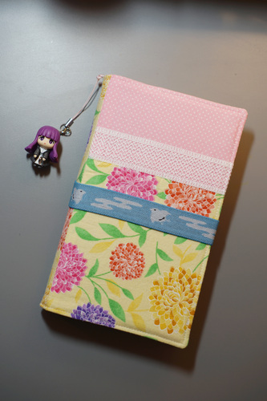
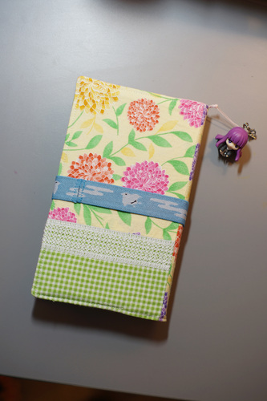
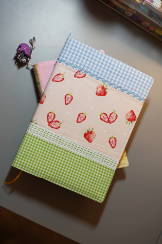
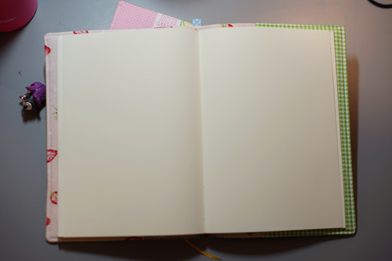
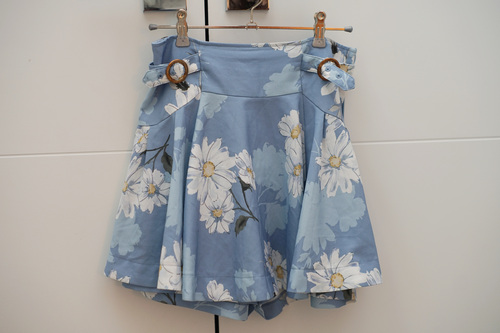

Can you believe it? The most stressful time of the year is coming up for small site owners: the advent calendar!!! Start writing down your ideas, boys!!!
I didn't take my camera to Kumoricon this year. I wrote down everything I want to remember in my diary still, so I still can write a post with a few phone photos, but it's just so much work to publish a full report with little to no payoff. Is it worth it? I can just read my own diary instead.
After Kumoricon, I went with Kohi and Linus to Ovulation Papers so Kohi could pick out her next Hobonichi Weeks. I always look at the cute covers and cry because I want one so badly... But I know in my heart, I make no plans so a Hobonichi is no good for me.
I made a diary cover back in January 2025 and a second in February 2025. I'm still using the A5 Leuctturm for secret activities, but it's almost full now! I bought one to replace it last year with a few pages already used, but it doesn't have a cute cover. My B5 Leuctturm planner only got one year of use and was replaced with a blank A5 Midori notebook for 2026. I really love the fabric for that cover too but I probably won't use it again and I have almost none of it left ;_;
Personally, I find the combination of the Midori 3 year and a blank A5 to be the perfect combination. I write down little memories of each day in the 3 year which are super fun to look back at! The writing in the A5 is much more verbose and perhaps quite a lot more negative thoughts as well, which are not fun to look back at every day. I also draw and paint sometimes in my diary, so blank is the best option for me.
I had made plans to make covers for my Midori 3 year diary and 2 A5 Midori notebooks, but it's honestly very hard to make room sew when you're living out of a suitcase. I had actually even chosen the ugly brown 3 year cover over the blue one thinking that I would just cover it. Now it's been almost a year! Recently, everything has lined up well and now I can sew to my heart's content~
I made a few modifications based off what I was and wasn't using. I completely skipped the pen holders. I haven't used them AT ALL and I actually find them quite annoying. I did not forget to add the charm loop at the top. Charms are really annoying but so cute~ The +3.5cm tip I forgot to add to the Leuchtturm B5? I did not forget it this time!
This time with the Pellon 808 interfacing, I could NOT get it to stick while following the instructions to a T. After cutting out a new piece and still failing, I tried again without the damp press cloth and it worked just fine. I will not be following the instructions any longer!!


I messed up the math and cutting and had to make the outer cover of this one twice! I think the prints look cute with my elastic chidori strap. This diary has another 2 years to be written and a Midori 5 year (same dimensions) lined up to replace it after.


I pulled out the 2 fat quarters of Hobby Lobby strawberry print for my A5 cover. I'm running desperately low on gingham now after this one! This diary is almost done, but I'll be reusing the cover for 2027.
I still have one cover left to make, so I'll consider taking photos to do a full tutorial on how I make these.

A thrift haul?! In 2026??? If you could belieb it!!

I did "the thing" again and found Liz Lisa in Goodwill! This skort was $9.99 and absolutely disgusting. I thought it was badly stained, but all the dirt came out with a soak in the sink. It was just... really really dirty and not stained at all. My last Goodwill Liz Lisa find was equally as unwashed. Are Liz Lisa owners just gross?